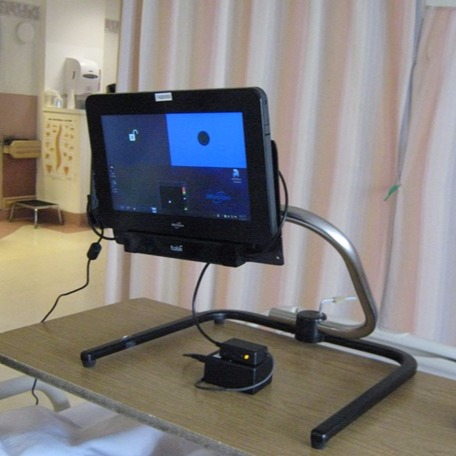
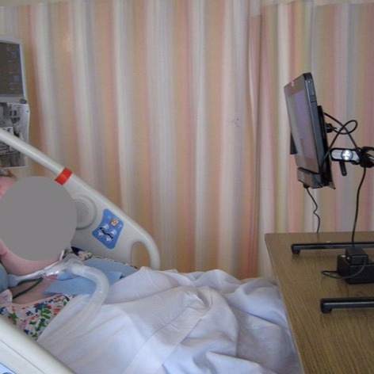

Eye Gaze Switch screen. Left - active region. Right - lock region

Tablet with eye gaze camera and on-screen switch positioned for patient use in acute care setting

Eye gaze switch being used by a "locked-in" patient for call bell access
Project - An interface that combines a software component (developed for Windows platform) and a hardware component (an USB electronic box) designed to transform part of the screen into a large switch that clients with limited eye gaze abilities can use to either control a more complex interface sharing the same screen (i.e., the remaining part of the screen) on that device or an external device/appliance (e.g., a call bell).
Scenario/Client Description - (1) A child with a diagnosis of progressive demyelinating disease; capabilities limited to eye gaze with visual sensory issues limiting ability to look at a busy, dynamic screen.
(2) Client “locked in” after brainstem stroke, residual movements include upward eye gaze and restricted horizontal eye gaze. Gaze is also affected by small flickering ocular movements. Client has no other voluntary, controlled movements. Cognition is intact.
Challanges - (1) Due to visual sensory sensitivity, this child was unable to use traditional eye gaze access. Rather, an auditory prompt was needed as options were scanned through, and he needed some way to select his chosen option using his eyes.
(2) No reliable switch site could be identified after extensive trials of a wide variety of mechanical and proximity switches. Traditional eye gaze use limited by ocular range of motion limitations and nystagmus. Fatigue is a large factor. Short term goal: call bell access. Long term goal: communication interface access.
Plan of Action - Creation of software that allows the use of a customizable area of a tablet screen as a switch to activate external hardware or software. Because tablets require a hardware–generated signal, the eye gaze selection must be channeled through an external USB-based programmable micro-controller, which relays the signal back to the device as a physical keystroke. A switch relay was also incorporated into the micro-controller, which allows control of external switch-operated devices (e.g., call bell). A “pause” area was also added to the screen, to allow the user to temporarily disable the eye gaze camera.
Client Outcomes/Feedback - (1) This idea originated from the child’s mother, who conceptualized that it would be helpful for him to simply have to gaze at the screen to activate a switch. While it wasn’t highly effective for this client due to his inability to maintain fully open eyes, the ACETS program is grateful for this creative parent’s idea. (2) Client is able to control her gaze movement and fixate on the portion of the screen to activate the switch, which is connected to the call bell to alert caregivers. Client did not previously have access to a call bell and required 24 h supervision.
Reflections/Future Work - Future considerations: addition of another switch channel to allow for two switch scanning or multiple device use; enhanced flexibility for positioning the switch(es) on the screen; an additional external cable; auditory feedback for switch activation.